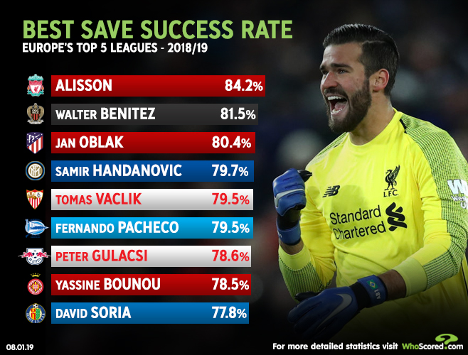

Thông tin cơ bản
Alisson Ramses Becker, hay còn gọi tắt là Alisson, là cầu thủ bóng đá người Brasil thi đấu ở vị trí thủ môn cho câu lạc bộ của Anh Liverpool và đội tuyển Brasil. Anh được vinh danh là thủ môn xuất sắc nhất năm 2019 theo FIFPRO và France Football.
Ngày/nơi sinh: 2 tháng 10, 1992 (28 tuổi), Novo Hamburgo, Rio Grande do Sul, Brasil
Chiều cao: 1,91 m
Cân nặng: 92 kg
Vợ: Natália Loewe (kết hôn 2015)
Đội hiện tại: Câu lạc bộ Bóng đá Liverpool (#1 / Thủ môn), Đội tuyển Bóng đá Quốc gia Brasil (Thủ môn)
Sự nghiệp cầu thủ
Alisson bắt đầu sự nghiệp tại Internacional, nơi anh đã có hơn 100 trận đấu và giành chức vô địch Campeonato Gaúcho trong cả bốn mùa giải anh thi đấu tại đây. Năm 2016, Anh chuyển sang AS Roma với giá 7.5 triệu euro để thay thế cho Wojciech Szczęsny trước khi có tên trong đội trong đội hình chính thức. Vào tháng 7 năm 2018, Alisson đã ký hợp đồng với Liverpool với mức phí ban đầu là 62,5 triệu euro (56 triệu bảng), có thể tăng lên 72 triệu euro (66,8 triệu bảng); một khoản phí kỷ lục thế giới cho một thủ môn vào thời điểm đó. Trong mùa giải đầu tiên ở câu lạc bộ, anh đã nhận được Găng tay vàng Premier League cho hầu hết các trận giữ sạch lưới trong giải đấu (21 trận) và giữ sạch lưới khác khi Liverpool giành chiến thắng Chung kết UEFA Champions League 2019. Alisson có trận ra mắt Đội tuyển quốc gia Brasil vào năm 2015.
Năm 2019 là năm đại thành công của Alisson. Về mặt tập thể, anh cùng Liverpool vô địch UEFA Champions League, UEFA Super Cup, FIFA Club World Cup, cùng Đội tuyển quốc gia Brasil vô địch Copa America. Về mặt cá nhân, anh đoạt giải Găng tay vàng các giải đấu Premier League, UEFA Champions League, UEFA Super Cup, FIFA Club World Cup, Copa America và được công nhận là thủ môn xuất sắc nhất thế giới bởi France Football và FIFPRO.